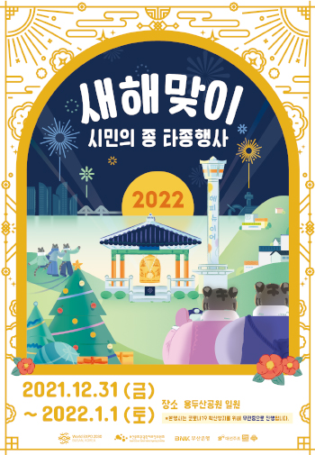
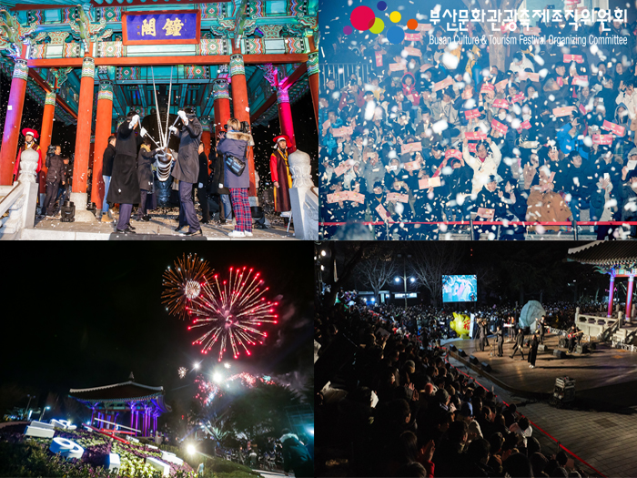

축제개요

2023 새해맞이 시민의 종 타종행사
일 정 : 2022. 12. 31(토) ~ 2023. 1. 1(일)
장 소 : 용두산공원 일원
주 최 : 부산광역시
주 관 : 부산문화관광축제조직위원회
후 원 : 부산은행, 대선주조
"희망의 종소리, 붉은 빛의 바다를 열다"
한 해의 마무리를 경험할 수 있는 축제! 새해맞이 시민의 종 타종식은 부산시민, 관광객 등 모두가 모여 함께 한 해를 보내며 기쁨을 나누는 축제입니다. 새해맞이 시민의 종 타종식은 추운 날씨지만 서로의 건강과 행복을 빌며 따뜻한 마음을 나눌 수 있는 축제로,
매년 수십만의 인파가 찾아오는 해양도시 부산의 특색을 살린 겨울철 대표 테마축제라 할 수 있습니다.
